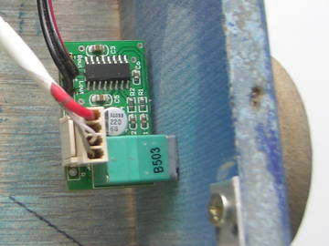
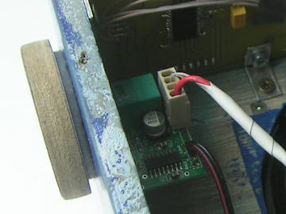
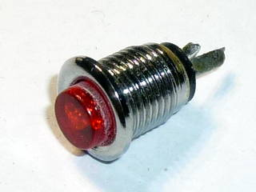

Приведено описание конструкции часов с FM-радио на светодиодных матрицах.
Я задумал это устройство как подарок маме на Новый, 2012 Год. И вот, не прошло и положенных трёх лет, и замечательные часики с FM-приёмником готовы. Вот теперь думаю, ждать до следующего Нового Года, или же подарить сейчас? Наверное не утерплю :-)
Это ящичек с динамиком на верхней панели и матричным светодиодным индикатором на передней. На индикаторе постоянно отображается текущее время. Кроме того, периодически (раз в минуту) на нём в виде бегущей строки отображаются день недели, дата и год. Также раз в минуту отображается название выбранной в данное время радиостанции. Две кнопки на верхней панели переключают радиостанции. При переключении на индикаторе отображается название радиостанции. Сбоку расположен регулятор громкости с выключателем. Выключатель отключает только приёмник, часы работают постоянно.
Список радиостанций задан в прошивке жёстко. Это позволило дать радиостанциям вменяемые названия, и отсеять те из них, которые не нравятся. Если нужно будет что-то изменить — перепрошью, мне не сложно.
Часы состоят из:
Ниже приведу описание каждого из компонентов.
Про него есть отдельная статья, не стану здесь дублировать информацию. Скажу только, что это светодиодная матрица 24x8, из красных светодиодов диаметром 5мм, управляемая по последовательному интерфейсу.
Процессорная плата содержит микроконтроллер STM32F100C8 (64К flash, 8К ОЗУ в корпусе LQFP48) с небольшой обвязкой (питание, часовой кварц, ионистор).
За основу взята плата от предыдущих часов, добавлены нужные компоненты и изменены некоторые подключения. Вместо SPI в этот раз вывел на разъём UART.
На плате также расположен модуль FM-приёмника. Это модуль на основе микросхемы RDA5807M. Сначала я купил модуль на основе TEA5767, но он у меня что-то нормально работать отказался. То ли здесь сигналы радиостанций слабоваты, то ли (это более вероятно) TEA5767 выдавала слишком слабый уровень звукового сигнала для усилителя НЧ. Микросхема RDA5807M совместима с TEA5767, так что программу переписывать не пришлось.
Есть пара косяков. Во-первых, я промахнулся с подключением индикатора. Собирался задействовать аппаратный SPI, но подключил не те ножки. Пришлось использовать программный SPI.
Во-вторых, я забыл завести на плату сигнал, определяющий, включен усилитель или выключен. При наличии такого сигнала можно не прокручивать название станции при выключенном радио.
Но это всё мелочи.
Развёл плату полностью в одном слое, всего две дорожки под резисторами типоразмера 0805:
Вот такая получилась плата:
По-моему, неплохо:)
Модуль усилителя я заказал на ebay. Назывался он «PAM8403 5V Power Audio Amplifier Board 2 Channel 3W W Volume Control/ USB Power». (Ссылку не даю, потому что они довольно быстро устаревают, и получается битая ссылка). Усилитель — зверь. Питается от 5 вольт, почти ничего не ест, и при этом поёт весьма громко. Качество — хорошее. Это моё первое знакомство с цифровыми усилителями, и впечатления — сугубо положительные.
Поскольку динамик у приёмника один, я использовал один канал усилителя.
Модуль снабжён регулятором громкости с выключателем. Я вывел ручку регулятора на боковую стенку корпуса:
 
Ручку сделал из ламината: высверлил круг корончатым сверлом, ошкурил, наклеил ламинированный рисунок. Под ручку подложил войлочный кружок, для плавности хода.
Здесь писать особо нечего. Купил пару самых дешёвых автомобильных динамиков диаметром 10 см. Рублей за 300, вроде. Поёт нормально, с мощностью, вкачиваемой трёхваттным усилителем справляется:)
Корпус собран из обрезков ламината толщиной 8мм на саморезах. Передняя стенка — из тонированного оргстекла (посажена на суперклей). Тонировка фиолетовая. Мне нравится сочетание этой тонировки с красными светодиодными индикаторами, я использовал такое сочетание в прошлых часах.
Вот как всё выглядело сначала:
Потом я зашпаклевал щели, всё ошкурил, закруглил углы. Загрунтовал автомобильной грунтовкой, покрасил из баллончика.
Далее смонтировал внутренности:
С кнопками вышла целая эпопея. Я купил вот такие:

Выбрал их потому, что они легко крепятся на корпус и не портят внешний вид часов.
Но оказалось, что кнопки эти очень плохо нажимаются! Чтобы нажать, приходилось прикладывать приличное усилие, причём не всегда одинаковое. В чём причина — не знаю. Возможно, мне попался брак. Или я перегрел их при пайке и нарушил внутреннюю геометрию. Или это просто такие плохие кнопки. Не знаю.
Как бы то ни было, это было неприемлемо. Во-первых, такие вещи сразу портят впечатление от изделия. И во-вторых, одновременное нажатие двух кнопок, которое требовалось мне для входа в режим настроек, с такими кнопками получалось менее чем в половине попыток. Так что пришлось изобретать.
Я изъял всю начинку из этих кнопок, получились хромированные ободки. Вкрутил их в отверстия в корпусе часов. А красные толкатели от этих кнопок наклеил на обычные тактовые кнопки (удлинённые). Тактовые кнопки впаял в кусок макетной платы и привинтил его саморезами на нужное место под верхнюю стенку корпуса.
Получились отличные кнопки — легко нажимающиеся, с чётким щелчком.
Питается устройство от какой-то зарядки от сотового, которая выдаёт напряжение 5В/500мA. Если не зажигать все точки в матрице, то этого питания хватает.
Вот небольшое видео:
На видео бегущая строка дёргается, но на самом деле это не так. Это недостаток видео, видимо какое-то биение между частотой кадров и частотой обновления изображения при движении бегущей строки.
Программа написана на C++. Использована операционная система реального времени scmRTOS. Кроме того, использована моя библиотека для stm32. В качестве компилятора использован gcc-arm-embedded.
Исходные коды программы можно найти в репозитории на github: https://github.com/antongus/led-matrix-clock-fm.
Там же есть краткое описание процесса компиляции и прошивки. Кроме того, в конце статьи приложен архив с исходными кодами.
Должен сказать, что такого сложного проекта у меня ещё не было. Я имею в виду не схемотехнику - она здесь простая. Также речь не о программировании - у меня были гораздо более сложные проекты. Речь об изготовлении готового изделия. Чтоб и корпус, и весь конструктив. Шпаклёвка, окраска. Куча мелочей.
Мороки было много, но и удовлетворение очень большое. Я доволен полученным опытом и результатом.
Статья опубликована 26 мая 2014г.
Статья обновлена 20 октября 2014 года. (добавлена ссылка на github-репозиторий с исходниками).
{kind=link}
{kind=link}
{kind=link}
{kind=link}
{kind=link}
{kind=link}